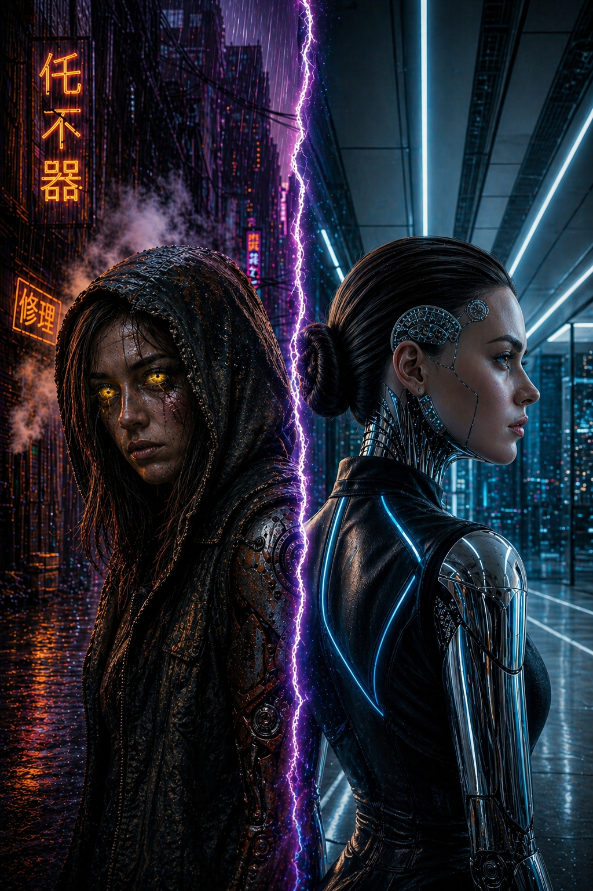

▶ Now Showing ◀

English Production
The Story of Elena Evans
REBODY explores what it means to own your identity when your body is a product and your mind is a file on a corporate server. In a world where resurrection is a service, who gets to be reborn?
The film is about class inequality, corporate monopoly, and the radical act of refusing to become someone else — even when that someone else has everything you ever wanted.
At its core, REBODY asks a question no technology can answer: if everything about you can be bought, sold, or transferred — what is left that is truly yours?
Who are you when your body can be replaced and your mind can be stored?
Who controls your right to live again — and at what price?
What does it cost to fight the system from the inside?
The year is 3050. Natural resources have nearly vanished, and the human body can no longer survive on its own. Most of humanity lives as cyborgs. The wealthy constantly upgrade their bionic components; the poor make do with second-hand parts scraped from black markets and junkyards.
The great promise of the era is digital immortality: when a person dies, their mind can be transferred to a new bionic body and live again. But this process belongs to a single, all-powerful corporation — Neuraxis — which charges a price few can afford. Minds are stored on Neuraxis servers after death. The government subsidizes storage, but not resurrection. Some awakened minds are put to work as cheap labor, with minimal rights.
Elena Evans knows this world better than most. She grew up in the industrial outskirts of New Ironhaven, repairing her own bionic parts with scrap metal. She leads the youth wing of ReBody, a growing movement demanding fair prices and an end to Neuraxis's monopoly. When the corporation announces a 40% price increase on essential components, the streets of New Ironhaven explode.
That same night, Ivanka Harlan — daughter of Neuraxis founder Edmund Harlan — watches the protest from a distance. Then a violent attack tears through the crowd: explosions, smoke, chaos. Elena and Ivanka die meters apart. Their minds arrive at the Neuraxis servers at the same moment.
In a catastrophic error the corporation will never admit, their minds are swapped during resurrection.
“Elena wakes up in the best body in the world. It is not hers.”
Now Elena has everything she never had: money, power, access to corporate secrets, and a seat at the table where the future of humanity is decided. But to change the system from within, she must maintain the biggest lie of her life — while the true enemy may already be watching.
Forty percent. That was all it took. When Neuraxis announced its price increase, the people of Sector 9 had nothing left to lose — and everything left to fight for.
New Ironhaven is a vast industrial megacity where the boundary between human and machine dissolved long ago. The wealthy live in towers of polished steel and clean circuits, their bodies pristine and regularly updated. The poor rebuild themselves in the city's shadow with salvaged components, hoping their parts hold together another year.
Dominating the skyline is the Neuraxis headquarters — a glass spire that serves as both corporate palace and monument to the new world order. The company owns not just the technology, but the social contract itself: you live, you upgrade, you die, you are stored — and your resurrection, if it comes at all, is on their terms.
In the industrial outskirts, in neighborhoods like Sector 9, broken bodies and broken promises pile up in equal measure. This is where Elena came from. This is what she wants to change.
Click or tap a card to reveal the character
“I fought my whole life for a body that worked, for a dignified death and a fair resurrection. Now I’ve been resurrected in the best body in the world — and it isn’t mine.”
Industrial zone worker’s daughter. Grew up surviving with broken tools and stubborn determination. Perspicacious, empathetic, deeply principled.
tap to flip back“I never wanted what my father built. I just never found the courage to say it out loud.”
Sensitive, silently courageous. Her diaries reveal a young woman who wanted to break from her father. In death, she becomes what she never was in life: free.
tap to flip back“Immortality is the most perfect product ever created. People will pay any price for it.”
Founder of Neuraxis. Brilliant and relentless — not through cruelty, but through cold conviction. Believes the market is the only honest system.
tap to flip back“Every revolution has a price. Our job is to be the ones who collect it.”
Neuraxis Chief of Operations. Controlled, paranoid, loyal only to power. Designed the forced labor program — and suspects “Ivanka” is not who she claims.
tap to flip back“I’ve known Ivanka for twenty years. You smile exactly like her. But your eyes look for exits she never looked for.”
Ivanka’s closest friend. The most dangerous person in Elena’s new life — not because she wants to destroy her, but because she loves Ivanka enough to need the truth.
tap to flip back“Elena became a symbol. Symbols don’t die. But the people who carry them do.”
ReBody’s leader after Elena’s death. Carries grief and revolt in equal measure. She doesn’t know Elena is alive — watching her from the other side of the wall she spent her life trying to tear down.
tap to flip back